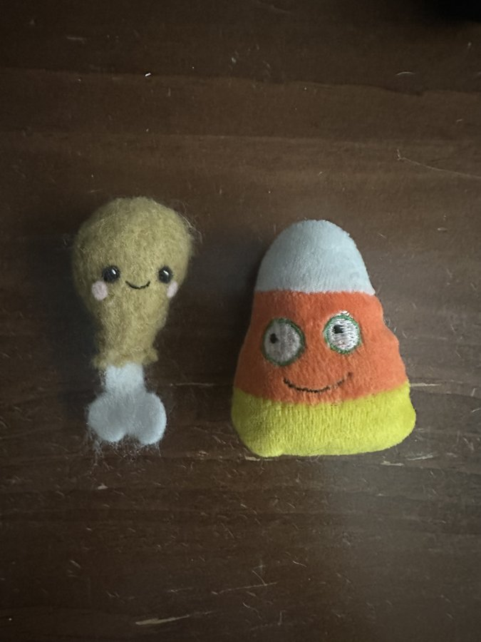
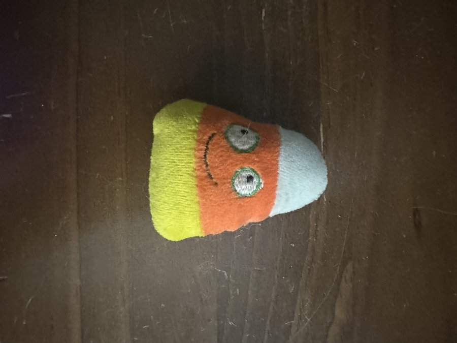
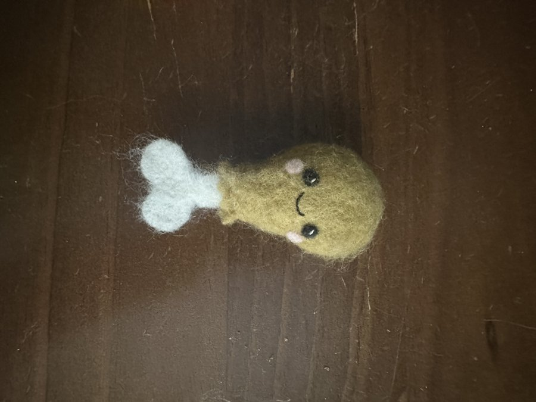
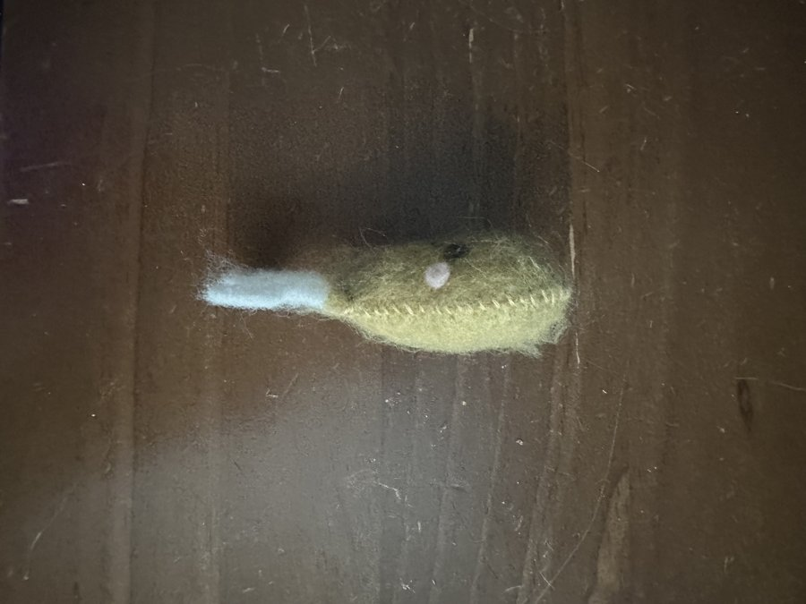
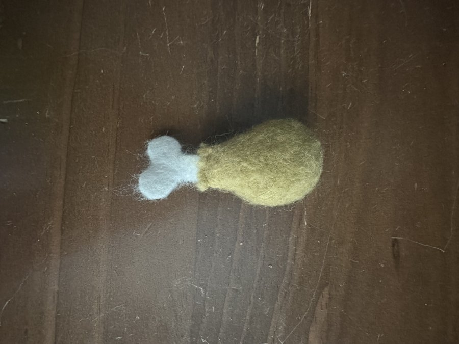
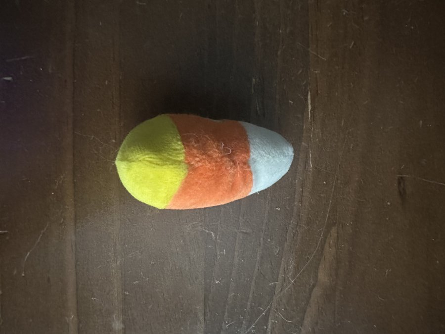
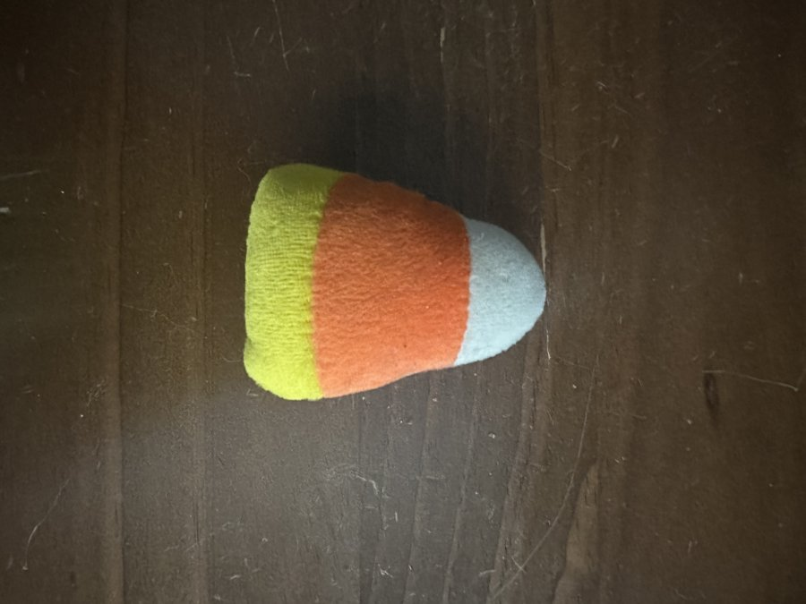

Jack's Toy Studio
Shape Corny and the drumstick to match the photos, then press
Copy for Claude
and paste it in the chat.
Copy for Claude
Reset all
Copied
Drag to turn · scroll to zoom · the grey bar is Jack's height to the shoulder (about 30 cm)
Your photos






